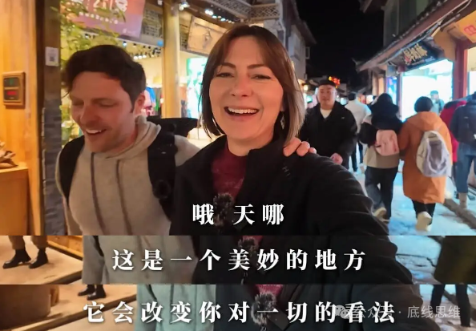
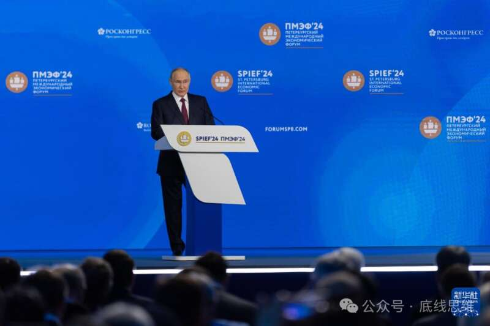
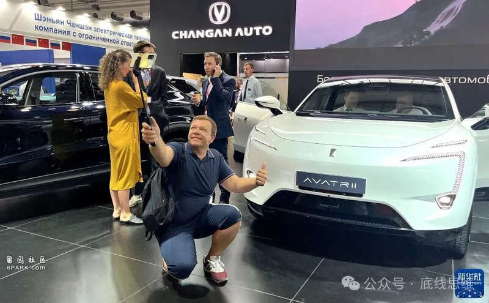
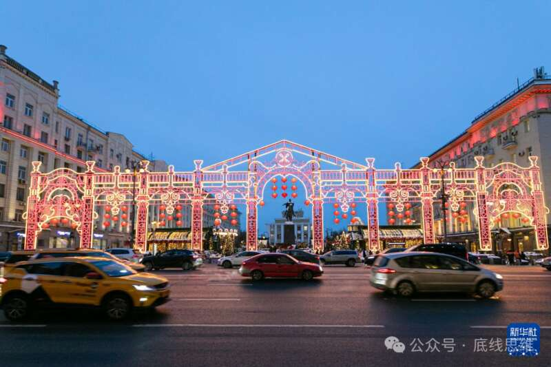
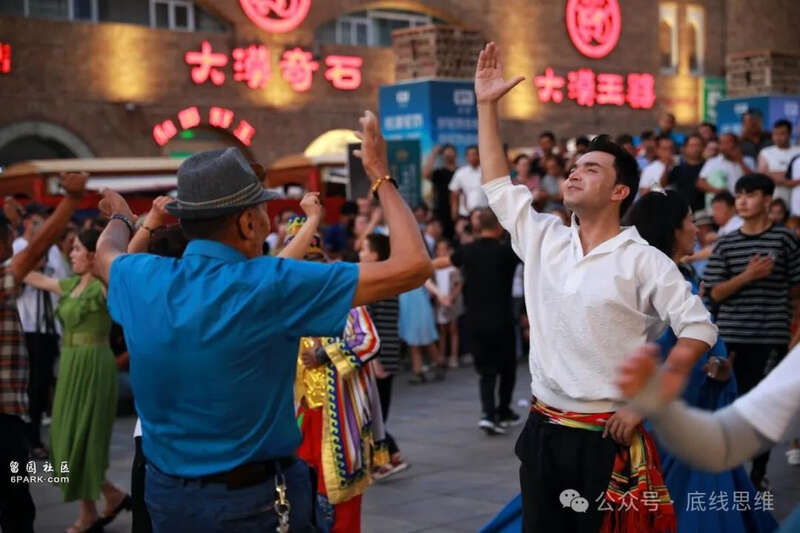
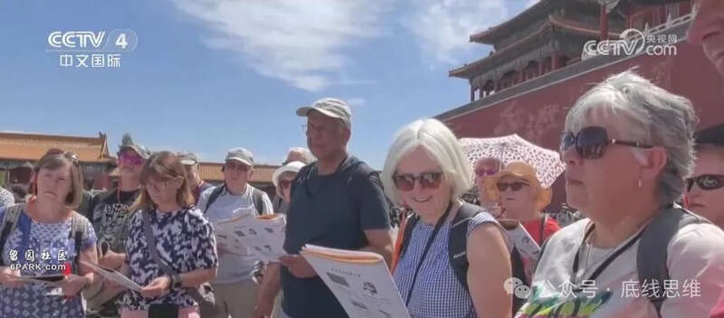
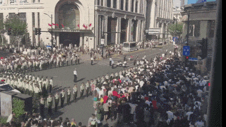
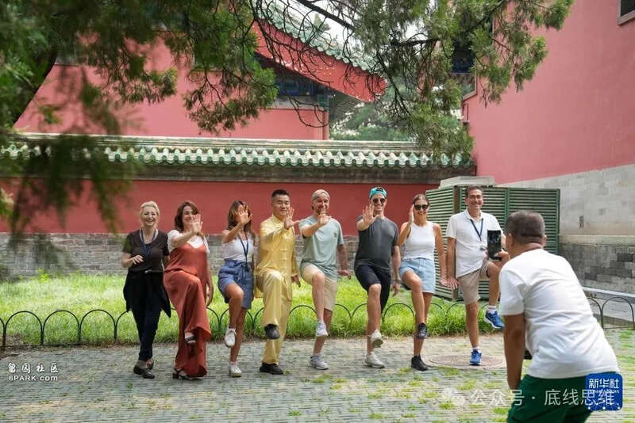

“这波由过境免签引发的‘中国热’，让西方精心编织的反华宣传瞬间破防了。”“我们中国‘新三样’是建立在制造业巨大的规模和高质量发展的基础之上的。”“俄罗斯企业应该采取哪些具体战略，以建立新的合作体系？”这段时间中国针对54国公民推出了144小时的过境免签政策，吸引了许多海外游客。在海内外的互联网平台上，“中国”成为了一个热词，而在这波“中国热”的背后，人们还在讨论“中国模式热”。在东方卫视7月29日播出的《这就是中国》节目中，复旦大学中国研究院院长张维为教授和复旦大学中国研究院研究员吴新文教授围绕“中国热”和“中国模式热”进行了探讨。
这就是中国
张维为演讲近期，中国对许多国家的公民推出了“144小时过境免签”，吸引了大量的海外游客来中国旅游打卡。这些游客居然发现了一个与西方媒体描绘的完全不一样的中国，他们把在中国拍下的视频纷纷投放到海外的社交网站上，许多带有“China travel”（中国旅游）标签的视频很快就火遍世界。西方没有想到一个小小的六天的过境免签，竟然让西方精心编织数十年的反华宣传和信息茧房瞬间破防了。正如我们在这个节目中多次提到的，西方媒体丑化中国已到了无以复加的地步，以至于许多中国人习以为常、日用而不觉的小事，就足以使许多老外惊掉下巴。比方说，在中国，女孩子可以凌晨在街上闲逛；中国随处都可以用手机拍照，不担心手机被人抢走，这在不少西方国家还是奢侈的行为；中国地铁干净便捷，比较一下纽约地铁的脏乱差；中国高铁舒适平稳快速方便，甚至还可以在高铁上点外卖；中国这么多快递放在那儿没人偷，不像美国现在许多超市连洗发水、漱口水都要锁在柜子里；中国城市时尚安全繁华，一个上海的高楼大厦比整个美国东部都要多；中国各地的美食之丰富，大的菜系就有八个，各种地方特色美食根本吃不完。世界上六天游遍一个国家是常态，但在中国，连北京等一个城市都不够游；中国的自然美景实在太多，一个标题为“中国那些美得不像真实存在的地方”的视频，获得了4000多万的播放量。当然还有中国科技太先进，老外圈里盛传：“你只要下载3个APP：支付宝、微信和美团，去哪儿都没有问题。”有人说：来中国之前，只知道中国是一个历史悠久的古老国度；来中国后，发现中国还是一个十分现代的超级大国。有人说，我们政府说不要去中国，我们的媒体说中国风险很大，你可能被当作间谍被逮捕。由于长期被灌输负面信息，很多外国游客抵达中国前都有某种焦虑或者不安。但一到中国机场，就意识到自己进入了真正的现代文明，这里不仅有最现代的硬件设施，还有高效便利的通关和开放自信的笑容。老外的亲眼所见、亲耳所闻，有视频，有图片，加上触动人心的许多感言，常使看视频的中国人感触良多，真是“自有国外大儒为我辩经”。

外国人来中国后，实话实说，西方长期散布的谎言就被揭穿了，中国“公知”长期编造的西方神话也不攻自破了。一条受到点赞最多的评论是：“你越探索中国，就越明白西方主流媒体就是笑话。”我早就说过，“一出国，就爱国”这是针对多数中国人的；现在是老外“一来华，就爱华”，这是针对多数老外的。今天的中国就是这样一个“既古老，又年轻，既传统，又时尚，既中国，又世界”的神奇国度，一个十分精彩的“文明型国家”。这波由过境免签引发的“中国热”，不由使我想起了一个报道：一位名叫阿诺·贝特朗的法国企业家，去年4月在美国参加了一场关于中国模式的辩论会。在辩论中，他通过自己在中国生活7年的经历，表示中国治理模式给中国人带来了稳定、繁荣和更多的自由。他说，在美国，大家有随时随地、随心所欲地独自散步的“自由”吗？他拿出数据，在美国一个人成为暴力犯罪受害者的概率比在中国要高出70倍。这种“免于恐惧的自由”才是真正的自由。他认为中国的制度和模式是独特的，它在中国消除了极端贫困，保证了每一个中国人生活的安全，为中国提供了稳定的发展环境，还带来了持续的繁荣和人民生活品质的提高，最终保证了中国人获得更多的自由。波兰前副总理科勒德克不久前在一次研讨会中也指出，西方的极化政治造成了自己国内的社会分裂，国际上也充满了对抗，而中国人民、中国政府领导人、中国商业领袖和中国学者提出一种让大家“双赢、共赢的模式”。“中国热”与“中国模式热”今天也在世界其它地方出现。今年上半年我先后三次访问俄罗斯，“中国热”“中国模式热”也在俄罗斯涌现。中国制造的手机、汽车、家电等随处可见，它们的品质得到广泛好评。盖洛普最新发表的民调显示，83%的俄罗斯人对中国持有正面的看法，而在经历过苏联解体的55岁以上的俄罗斯受访者中，对中国持有负面看法的比例仅有8%。普京总统近来更是多次公开赞扬中国模式。圣彼得堡国际经济论坛开幕的6月5日那一天，普京总统与参加论坛的国际新闻机构负责人进行了座谈。他这样说的：“我们为中国感到高兴，为中华人民共和国在许多领域内取得的成功感到高兴，其中包括太空领域，这些都是独一无二的。”他还说，这些都表明“中国成功地创造了非常独特且非常高效的经济发展模式，比美国模式更有效，这一点已成为俄罗斯专家的普遍共识”。他还指出，美国和一些欧洲国家试图阻碍中国经济发展是一个“巨大的错误”：“总的来说，中国经济非常可靠，而且正日益发展为高科技经济。在我看来，美国或某些欧洲国家试图以某种方式限制中国经济的发展，这是一个巨大的错误。因为在我看来，要想取得成功，就需要适应这种进程，而不是试图加以阻止。”普京还批评了西方的所谓中国“产能过剩论”，他说这纯属“无稽之谈”，“讲这些话的人认为自己是相信市场，是‘市场主义者’。他们到底是怎么回事，他们难道不知道是谁决定了生产是否过剩吗？是由市场决定。如果中国生产一定数量的汽车，而市场可以全部加以消化，那算什么生产过剩呢？”
6月7日，普京在圣彼得堡国际经济论坛全体会议上讲话。新华社在论坛的最后一天，普京总统又发表了长篇演讲，主要聚焦俄罗斯国内的经济发展。主持人问了他一个颇为尖锐的问题：现在俄罗斯准备采用什么经济模式，会不会采用“威权社会主义性质的资本主义”？普京没有直接回答，他说：“我不久前讲过这么一个观点：我们应当关注全球正在发生的事情。比方说，许多专家都认为，中国经济模式比至今存在的各种模式——包括北美模式和欧洲模式——更有效。我赞同这一评价，情况的确如此。所有的经济数据都显示了这一点，中国模式根据中国的条件结合了计划经济和市场经济的长处”。他还笑着说：“我们不少人把经济学看作是科学，我看它更是艺术，一种模式一定要适合一个国家自己的现实、历史、文化和社会状况。世界上不存在可用于所有国家的单一的标准，任何国家都不能机械僵化地照搬其它国家的模式。”在这之前的5月28日，白俄罗斯总统卢卡申科也公开赞扬中国模式。他引用普京总统的话说，中国知道如何进行规划和管理，这是中国经济成功的原因。卢卡申科说，这也是白俄罗斯应有的发展方向。他说，西方标榜的所谓“自由市场”其实并不存在，他们利用美元控制世界、为所欲为、盲目私有化，就像一个“定时炸弹”，如果没有一定的规划和管理，这个“炸弹”随时可能爆炸。对中国模式颇有研究的俄罗斯学者尤里·塔夫罗夫斯基，去年12月19日在俄罗斯《莫斯科共青团员报》发文，他这样总结的：“中国成功的秘诀包含三个要素——国有经济、市场经济和稳定的执政党。其中，执政党负责协调前两个要素的协作以服务于整个国家的利益。军工、自然垄断行业、运输、能源、基础设施、主要银行以及教育和医疗体系是国家拥有的，同时民营经济为国家贡献了60%以上的国内生产总值、80%以上的城镇劳动就业岗位和50%以上的税收。”他特别讲了一个观点：自俄罗斯特别军事行动以来，大部分俄罗斯人放弃了与西方保持平等、互利共存的幻想。“自由资本主义思想”在俄罗斯逐渐边缘化，抱有这种思想的人开始丧失自己在媒体、文学和艺术中的话语主导权。年轻人对社会主义的兴趣与日俱增。一些民意调查表明，约50%的年轻人希望生活在社会主义制度下。苏联时期的电影、音乐、有关社会主义时期的军事和经济的胜利以及苏联解体的原因等等的出版物越来越受欢迎。同时中国商品，尤其是中国汽车，大量涌入俄罗斯市场，引发了人们对社会主义效率问题的思考。它们优良的品质改变人们过去对中国商品质量的刻板印象，启发他们对中国特色社会主义的效益问题进行深入的思考。
2023年7月11日，在俄罗斯叶卡捷琳堡举办的第七届中俄博览会上，参观者与中方企业展出的汽车合影。新华网被西方媒体称为“普京大脑”的俄罗斯哲学家杜金教授，非常感谢我们中国研究院2018年邀请他来访问中国——作为访问学者在中国待了一段时间，使他完全改变了自己过去对中国的看法。他上世纪90年代曾担心中国拥抱西方主导的全球化，会放弃中国自己的传统和社会主义思想。但他在中国的实地考察和学术交流改变了他的认识。他发自内心地认为中国模式成功了，中国走出一条既不同于苏联道路、也不同于西方道路的成功之路。他也高度评价我提出的“文明型国家”理论，并主动把它介绍到俄罗斯；他多次指出，现在普京总统也多次公开表示俄罗斯是一个“文明型国家”。越来越多的俄罗斯学者认为我总结出的“文明型国家”的八条标准——即“四超四特”：超大型人口规模、超广阔疆域国土、超悠久历史传统、超丰富的文化积淀、独特的语言、独特的社会、独特的政治、独特的经济——也适用于俄罗斯。今年上半年我们中国研究院组团先后走访了韩国、蒙古、法国、马来西亚、泰国、俄罗斯等国家，我自己也应邀在这些国家介绍中国道路、中国模式。最新的一次是6月19日下午，在俄罗斯的文化地标——俄罗斯国家图书馆做了一个题为“中国模式及其全球意义”的主题讲座。我从普京总统赞扬中国模式说起，与俄罗斯听众探讨了中国模式的主要特点，如中国模式的哲学基础是实践理性，中国模式追求良政善治，中国模式发展混合经济，中国模式力求实现政治力量、社会力量和资本力量有利于大多数人利益的一种平衡。我还概述了中国“集四次工业革命为一体”的崛起，并强调中国今天已经走到了第四次工业革命的最前沿。我还介绍了中国模式的底层逻辑，也就是一个“文明型国家”的崛起。我说，中国不会向外输出中国模式，但越来越多的国家正把目光投向中国，希望汲取中国成功的经验。中国模式确实可以为许多国家实现现代化，以及为全球治理提供许多新的智慧。但这是另外一个很大的话题，实际上我在《这就是中国》节目中也多次有所涉及，今天就不在这里赘述了。吴新文演讲我正好参加了复旦大学中国研究院的代表团，出访俄罗斯，几天下来领略了俄罗斯作为“文明型国家”的魅力，看到莫斯科大街上来来往往的中国品牌汽车和商场里中国制造的商品，对俄罗斯这波“中国热”和“中国模式热”有一些观察和思考，在这里和大家分享一下。俄罗斯历史上先后共有四次“向东看”或者“中国热”。辛亥革命爆发后，列宁、斯大林等共产党领导人把目光投向以中国为代表的东方。随着中国革命形势的发展，以苏共为领导核心的共产国际积极指导并帮助中国共产党的成立和早期运作，还创办了莫斯科中山大学，为中国革命培养人才，有力地推动了中国革命。这是俄罗斯的第一次“向东看”。俄罗斯第二次“向东看”，发生在我们新中国建立以后。20世纪50年代，中苏结成同盟，苏联支援中国156个工业化项目，在资金、设备、技术等方面援助中国，并派出苏联专家来华，指导和帮助中国的工业化和社会主义建设，同时接纳中国留学生，为中国的社会主义建设培养人才。这可以说是俄罗斯的第二波“向东看”。1991年苏联解体后，当时俄罗斯有部分“先知先觉者”，开始注意中国改革模式和苏联改革模式的不同，即不是贸然进行激进的政治改革，而是首先进行循序渐进的经济改革。在那一时期，中国蒸蒸日上的平稳发展势头与俄罗斯的急剧动荡衰退形成了鲜明的对照，越来越多的俄罗斯人看在眼里，并开始思考俄罗斯未来的发展道路问题。这是俄罗斯第三次“向东看”。俄罗斯第四次“向东看”发生在2014年乌克兰“颜色革命”之后，至今已持续了十多年。在这一阶段，中国发展已从量的积累变为质的飞跃，而俄罗斯融入西方战略彻底破灭；面对西方的全面打压、孤立和制裁，俄罗斯各界痛定思痛，把关注的目光全面转向中国。
2024年2月9日，在俄罗斯首都莫斯科，车辆在中国新年主题装饰前驶过。新华社与前三次相比，俄罗斯第四次“向东看”或“中国热”，不仅对中国的发展成就有了更为全面、深入的了解，而且对这一成就背后的中国模式、对中国共产党的治国理政经验有了更多的思考和研究。这波“中国热”表现出了新的特点。一是聚焦中国发展奇迹背后的中国制度优势。俄中友好和平与发展委员会专家理事会主席塔夫罗夫斯基认为，“新时代中国特色社会主义”是继封建主义、资本主义和苏联模式的社会主义之后的一种新的世界经济制度，这种制度汲取了此前模式的优势，将国家战略计划的集中性和市场的充分竞争性、大众的社会主义意识形态和个体创造性的自我实现有机地结合了起来，党的领导作用则是这一制度模式中最重要的部分。二是重视中国发展成就背后的思想创新。俄罗斯共产党中央委员会主席久加诺夫指出，中国共产党高度重视理论创新，把马克思主义的基本原理同中国特色社会主义的实践相结合，这是中国共产党成功的重要秘诀。三是一改苏联时期俄罗斯对中国的“老师”和“老大哥”这样的姿态，强调俄罗斯必须全面向中国学习，借鉴中国发展经验。俄罗斯科学院远东研究所专家拉林、俄罗斯伊兹博尔斯科俱乐部副主席纳戈尔内等人明确提出，俄罗斯要实现复兴就必须参考并借鉴中国的发展经验。另外，俄罗斯专家还提出，中国的党政干部培养、经济特区试点、基础设施建设、实体经济优先、电子商务、绿色能源、电动汽车等领域，都有值得俄罗斯学习借鉴的宝贵经验。在中俄双方的共同推动下，很多领域的学习交流已全面展开并初见成效。四是关注中国模式和中俄合作的世界意义。俄中关系研究和预测中心主任乌亚纳耶夫发现，中国在实施“一带一路”倡议的过程当中，与各种国家集团、国际组织、专门小组、委员会等发展双边和多边关系。他称赞“一带一路”倡议考虑到了各方的关切，遵循了共赢、尊重和信任的价值观，重视和平发展、互利合作。在这次莫斯科之行中，我们可以感受到俄罗斯各界对苏联时期社会主义更多的怀念和认同，社会主义的某些元素在俄罗斯也有复苏的迹象。但俄罗斯能在多大程度上远离资本主义、借鉴社会主义，还需要进一步观察。不过，可以肯定的是，中俄这两大“文明型国家”在上海合作组织、金砖国家组织、“全球南方”和联合国框架内的相互学习、支持和全方位合作，必将有助于形成一种建立在共商、共建、共享、共赢基础上的新型全球化，推动世界体系从单极世界向多极世界进一步演变，最终建构一种更为公正合理的新的全球秩序。谢谢大家！圆桌讨论主持人：从144小时的免签过境政策开始说，其实很长一段时间来，大家对中国也有各种各样感到好奇的地方。比如以前海外的游客来中国，会惊叹于中国的风俗、文化、美食，当然还有大美山川等等；但是这次来，我们再看他们发的短视频的内容，关注点还是有明显的不一样的，比如说他们会关注我们那么安静、那么便捷、那么安全等等。张老师您觉得这些变化说明了什么？张维为：我想这次免签带来的“中国热”有它的特点。一是它来自于西方国家或非西方国家的普通百姓的感受。你看印度的“网红”到乌鲁木齐，他原来以为乌鲁木齐很落后，但发现它跟北京、上海好像没有太大的差别，他在那儿惊叹。还有就是西方国家的民众长期受西方主流媒体的误导，认为中国是落后、贫困、不安全的，甚至连天空都是黑的，结果来了中国之后发觉完全不一样。
新疆国际大巴扎里的歌舞表演 中央广电总台国际在线此外，现在是互联网短视频时代，不得不承认很多人是为了流量，因为他只要放中国旅行的视频，就有很多人观看。某种意义上中国被西方骂得太多，也就成为一个焦点，只要是关于中国的，不管好的、坏的，大家都关注。我看到过一个短视频，我自己也被逗得笑得眼泪都要下来了：一个美国人在街上学中文，问“好吃”的中文应该怎么说，那个人说“美味的”，他就不停地到处说“美味的”、“美味的”，但是四声读不好，有时候说成“没味的”。主持人：因为他们之前受到误导，接触到的信息对于中国的抹黑太多，所以他们也很想知道中国到底是什么样子的。吴老师看过相关的短视频吗？吴新文：看了。来中国旅游的这些西方人，我觉得有很多在他们国内应该是中产阶级，原来他们对自己的国家、对自己的制度，甚至对自己所住的那个小镇、小城都是非常有自豪感、优越感的；再加上西方报纸对我们中国的宣传，他们一定认为他们比我们要高很多，说不定原来是以居高临下的心态来看待我们中国的。但来这之后，突然发现，中国和他们原来想象的完全不一样。
主持人：对，我们国内互联网平台上的网友，对这个事情也有观察。不少海外游客利用这个免签政策来中国，他们可能去的主要是一些大的口岸、城市，我看有很多中国的朋友就在下面留言，说“欢迎您去三四线城市看看，您也会看到一个非常丰富的、充满活力的中国”。张维为：中国网友们有一个说法叫“特种兵之旅”，现在6天144小时的免签，他只要稍微在周边国家转一转，比方飞一次韩国，回来又是6天，几个6天加起来就能转很多很多地方。主持人：我也看到了，确实有一些国外的朋友就是这样反复用这个144小时的政策。我们之前节目中也讨论过，许多海外的游客过来，他们会觉得在这里支付还不够便利。而现在，比如说像上海要建设国际消费中心城市，也准备了许许多多的POS机，总而言之都是给大家提供各种配套的方便。从“中国热”到“中国模式热”，特别是两位的演讲相当的篇幅都说到了俄罗斯对中国的观察。那为什么它的“中国热”对中国模式的关心那么重要？张维为：我觉得这次俄罗斯“向东看”的深度和广度跟过去不一样。我今年已经三次去俄罗斯了，方方面面的人接触得比较多，看得出来，大家大致上有几个共识：一是普遍认为中国是真的成功了；二是他们经历过戈尔巴乔夫、叶利钦时期的混乱，这个混乱过去我们从外边观察，可能认为只有两三年，他们现在的普遍共识是有整整十年。主持人：也就是说，这么长时间的混乱，其实对俄罗斯的社会、普通民众的生活带来的动荡、破坏是很大很大的。张维为：对，这也可以理解为什么至今普京的威望非常高，因为俄罗斯现在的稳定、发展和繁荣，是普京时期带来的。我们的导游在赤塔生活，她说整整十年日子太难过了，甚至很多时候一天的供电时长只有两个小时，因为电力公司全都私有化了，这些经历使俄罗斯人大彻大悟。我还问了俄罗斯一位很资深的学者，我说你们历史上一直有“向西看”的人和“本土派”的人——也就是强调自己的文化、文明，现在看来“本土派”占上风。这是短暂的现象，还是会是长期的现象？他说，我们先不讨论理论，就看事实，而事实就是，俄乌冲突爆发之后，大批亲西方的俄罗斯社会精英离开了俄罗斯前往西方，但现在大规模地返回。为什么返回？一是他们到了西方国家之后，突然发觉他们眼中的西方也不怎么样。第二，他们还受到当地人的歧视，甚至有些俄罗斯人是支持乌克兰的，而到西方以后人家还是把他当成另类，认为“你是俄罗斯人，我们就不接受你，也不接受你的文化”，这种感觉让他们不得不觉得还是回到俄罗斯好。主持人：事实给他们上了最好的一课。吴新文：俄罗斯这次的“中国热”和“中国模式热”，我觉得是非常不容易的，有了质的改变。我们去俄罗斯参观，接触到的一些人，包括看到的媒体上的报道，他们的变化是非常大的。我觉得有两个原因：一个是西方确实狠狠地打了他们一巴掌；另外一方面，他们确实看到了中国的发展、中国的成功，这个对他们来讲是一个很大的触动，尤其是很多俄罗斯人到我们中国看了、体验了之后，发现确实是不一样的。张维为：我讲两个案例来说明俄罗斯这次“向东看”的变化。一个是这次在圣彼得堡国际经济论坛上，主持人问普京总统：“当年欧洲是世界经济的中心，所以我们建了面向欧洲的圣彼得堡；现在亚洲成为世界经济的中心，我们是不是要在远东建一个面向亚洲的‘圣彼得堡’？”这是一个很有意思的问题。普京说：“我们是需要发展我们的远东地区，而且需要有大的城市，但是我们现在要注意更多地用市场的方法，自然而然地形成一个城市，而不是我下个命令去建一个城市。”现在俄罗斯跟北约的关系很紧张，而莫斯科、圣彼得堡都离西方、离北约太近了。这是他们民间和学者都在议论的一个话题。第二个就是俄罗斯哲学家杜金，2018年到我们中国研究院做访问学者，我们跟他进行了很多坦诚的交流。他到北京去，听到出租车司机一边开车一边听京剧，他问我们一个陪他的研究人员“他在听什么”，那个研究人员回答“Peking Opera”（京剧）。他说，中国的普通的司机都听Opera，听歌剧，这个细节也表明中国古老文化是无处不在的，是“活着的文化”。杜金在上海待的时间更长一些。他每天出去散步，自己感受，而这里的社会治安、人民实际拥有的财富，以及各方面生活的便利，使他得出个很简单的结论：中国模式真的成功了。这个结论很重要。
国庆节期间的上海南京路主持人：您刚说中国模式，我们在节目里面一直说中国模式有很多维度，不同的国家可能可以根据自己的实际情况取一瓢饮，就是可以借鉴一下我们中国经验的其中一部分。刚才两位演讲当中引用普京和卢卡申科他们对中国模式的一些见解，在你们对俄罗斯的访问当中，观察下来，他们对中国模式的理解是不是真的相当精准了？张维为：我相信在这么多中俄高层的交往中，他们获得很多非常真切的感受，了解中国模式是怎么运作的。同时，像我们作为智库，和俄罗斯也一直有交流，我们跟他们介绍中国模式，而且全是开放式的，欢迎任何问题，没有任何禁区，他们的问题也很真诚。他们现在了解中国模式，不光是宏观的政治、经济，包括国有企业和民营企业关系，而且也涉及各种具体事项，比方中国怎么培训干部的、创新方面是怎么做的、特区是怎么建的、规划是怎么制定的，他们关心的问题越来越具体。吴新文：现在这个“中国模式热”，我发现有一个特点，就是现在世界上很多国家已经发现，资本主义的运作越来越功能失调，所以有很多国家开始要看其它地方，以解决自己国家的问题。不管是什么模式，最终总归要解决问题，美国的这个资本主义，现在很多问题都解决不了，世界人民都看在眼里。观众互动主持人：现场有很多朋友也非常关心中国模式，特别是在外国人的心中，他们怎么看中国模式，能够从哪些角度观察中国模式的长处，我们一起来讨论。我注意到现场有一位朋友来自于“今日俄罗斯”电视台，是我们的同行，欢迎您来到我们的节目当中。弗谢沃洛德·普利亚：尊敬的主持人，尊敬的各位嘉宾，感谢今天邀请我参加节目。我非常开心，并深感荣幸。普京总统在圣彼得堡国际经济论坛上赞扬了中国的经济模式，他强调不同的国家需要适合自己的发展模式，没有通用的模板。近年来，俄罗斯一直密切关注中国模式。就在刚过去的2023年，俄罗斯的分析人员发布了一份报告，称俄罗斯正在采取一种与中国的“双循环”非常相似的经济模式，分析人员称其为“三循环”。俄罗斯的“三个循环”分别是国内需求、重要的出口和国家设定的优先事项。这种来自中国的影响体现在俄罗斯社会生活的方方面面。可以说，在过去几年里，由于我们两国之间的互助和友谊，中国在俄罗斯的形象大幅改善。作为一名媒体从业人员，我应该说打破刻板印象是非常困难的。俄罗斯人对中国有很多刻板印象，中国人对俄罗斯也有很多刻板印象。我很高兴我所代表的“今日俄罗斯”电视台可以和中国的社交媒体合作，也有很多中国媒体在俄罗斯工作，帮助消除这些刻板印象。这一点在旅游业中也可见一斑。因为最新的数据显示，中国在2024年成为俄罗斯游客出游的前五大目的地之一，到中国的俄罗斯游客比到埃及的还多，而埃及通常是俄罗斯人非常喜爱的旅游目的地。我认为，我们两国之间的友谊和信任正日益增长，这是显而易见的。俄罗斯政府正在快速采纳中国的经济政策和经济模式。我的问题是，俄罗斯企业应该采取哪些具体战略，以更高效地开展工作，带来创新，建立新的合作体系？谢谢。张维为：我先要表扬“今日俄罗斯”，我们也很关注这个媒体，我认为“今日俄罗斯”是一个“能打仗的媒体”。很多西方国家包括美国、英国、法国等等都把它禁了，它们突然发觉很多事情上人家更多地看“今日俄罗斯”来获得信息，而“今日俄罗斯”的口号就是“Alternative Information”，即“其它渠道的信息”。我觉得这个是我们双方可以互相借鉴的地方。至于俄罗斯的企业界、商业界怎么借鉴中国经验进行创新等等，我个人觉得，俄罗斯的经济总体上正在转型，它的制造业在恢复且发展中，很多产品它自己都在生产了。中国企业去俄罗斯投资的也很多，这些都是非常积极的。我觉得中国模式有很精彩的一块，就是政府和市场的关系，还有国企和民企的关系。正好你又在中国，你不妨去深圳做些调研，深圳在政府和企业、市场的配合方面是做得非常好的；你还可以去安徽合肥，看看安徽模式怎么做，他们也很厉害，他们有一种“风投意识”，就是选几个产业，只要一个成功的话，它就能带来巨大的变革和收益。吴新文：我想补充一点，其实企业、商界采用什么样的策略战略能够有利于促进创新，我认为有一个东西，就是一定要保持实体经济在一定的规模上，强调制造业的重要性。我们想想苏联时期，它为什么能有那么多的创新？第一颗人造地球卫星上天、最早把人类送上太空，都是苏联那个时候做出来。它为什么能做出来？是因为斯大林时代的工业化已经奠定了一个非常坚实的基础，它在这样一个基础上才有爆发。其实我们中国现在的“新三样”这些创新，都是建立在中国制造业实体经济的巨大的规模和高质量发展的基础之上的。现在我们非常高兴看到俄罗斯的实体经济在慢慢恢复，我觉得制造业优先、实体经济优先这个战略绝对要坚持。张维为：我再补充一点，就是普京总统在这次圣彼得堡经济论坛中多次强调，要开发远东地区；然后你看普京总统这次访问中国的时候专门去了哈尔滨，去了哈工大。我们的王毅外长也去了俄罗斯远东地区，还召开一些相关的会议。所以我觉得这一块的合作潜力巨大，对俄罗斯来说，这样会让空间布局更加合理，面向亚洲的板块发展起来，对于两国来说都是非常好的事情。观众：张教授在他的演讲里提到，有一名法国友人在我们中国住了7年，对我们的中国模式特别推崇，这不由让我联想起18世纪在法国也掀起了“中国热”。我就想问一问，18世纪的法国掀起的“中国热”，和现在俄罗斯掀起的“中国热”及“中国模式热”，有什么联系以及区别？张维为：有一些区别。18世纪时，客观来看，我们中国是当时世界范围内农业文明的最巅峰，所以这个时候像伏尔泰这样的思想家就把目光投向中国，发自内心地觉得中国文化太优秀了，背后是农业文明带来的整体的富庶和和平。相比之下，欧洲是天天打仗，而中国虽然有各种各样的问题，但总体是和平的，这给欧洲带来了震撼，也是我们对欧洲启蒙运动的贡献。如果说当时是农业文明时代的“中国热”，今天则是信息文明时代的“中国热”，这个时候对中国的尊重，背后是对中国模式的认识。比如你到西藏、新疆去，那儿的手机信号比巴黎、纽约的都要好很多。这是我们信息革命、我们社会主义制度带来的，基础设施是国企建的，民企把电子商务做到极致，这就是中国混合经济模式。这一切产生的影响非常大，这个“热”会持续很长时间。而且普通老百姓来中国旅游，不光是发现一种不一样的生活，还会对中国模式形成许多新的理解。

来自意大利的游客在北京天坛公园体验太极拳后合影留念。新华社吴新文：这两个“热”，一个非常大的相似之处在于，18世纪的法国也在思考法国朝何处去，所以它也要向世界其它地方看一看，看有没有什么新的可能性。现在俄罗斯也是，就整个国家的认同、自我定位、未来的发展，他们的精英阶层都要思考。这个是一致的。但也有一个差别。当时法国的这波“中国热”，是通过在我们中国的传教士带回的关于中国的很多信息，所以是间接了解，当然当时中国的一些商品也已出口到那个地方，但毕竟有限。而我觉得这波“中国热”就不一样了，这波“中国热”是在很多交流，特别是很多俄罗斯人到我们中国实地感受体验了之后得出的这样一个结果。观众：俄罗斯掀起“中国热”和“中国模式热”，它是否意味着我们中国的软实力上了新的台阶？您认为这种“中国热”、“中国模式热”的趋势，会对中俄两国的关系，以及全球政治格局，产生什么样的影响呢？张维为：软实力、硬实力这些概念，对我们解释一些现象有帮助，但是也不要过多地牵涉，因为对中俄两个国家来说，双方都有自己的软实力、硬实力，而且是高度互补的。您看我们这次在俄罗斯交流时就发觉，西方制裁达15000多项，但对俄罗斯这样的大国是没有用的，它可以自我生存，因为它有足够的粮食、足够的能源，背后是俄罗斯自己的硬实力和软实力，它有强大的军事实力，同时有强大的文化实力，而且和中国保持着非常好的关系。所以我觉得这是两个国家之间的硬实力和软实力的一种战略协作。非常重要的是，现在民间的互相接触非常多，包括网上各种各样的互动，这一切都是软实力的补充。吴新文：我觉得文明的交流往往是先从器物开始，先接触人家的东西，看看这个东西是如何生产的，它就要追问到制度，而制度后面就是观念、价值观。我觉得这些是整体性的，很难把它说成哪一个是硬实力、哪一个是软实力。现在我就特别关注制度，包括思想观念，甚至生活方式——文明最终还是一种生活方式。